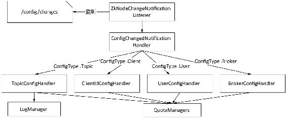

动态配置管理器（DynamicConfigManager）主要用来对相关配置的变化进行处理，Kafka将可以通过ZooKeeper进行管理的配置划分为4个类型，称为配置类型（ConfigType）或配置级别，每个配置类型称为一个实体（entity），这4个类型分别为Topic（主题级别）、Client（客户端级别）、User（用户级别）和Broker（代理级别）。用entity-type来指定所属级别，4个级别的entity-type依次为topics，clients，users和brokers。
在每个代理启动时会实例化并启动一个动态配置管理器，该管理器会注册一个ZkNodeChangeNotificationListener监听器，该监听器实质是注册了一个IZkChildListener类型的NodeChangeListener用来监听ZooKeeper的/config/change/路径下节点的变化。该路径下的节点命名规则为：以“configchange”字符串作为前辍，之后连接由10位数字（起始为0，不足10位数字左补0）递增组成的字符串，如节点名为“config_change_0000000000”。为了下文讲解方便，将该节点称为通知节点。当该路径下节点发生变化时，若有新的节点创建即表示此时配置发生变化，此时会触发监听器根据ConfigType调用相应的ConfigHandler进行处理。配置发生变化时在ZooKeeper的/config路径下有所体现，Kafka提供了修改配置的工具类：ConfigCommand类和TopicCommand类，客户端可以通过这两个工具类对配置进行修改，在${KAFKA_HOME}/bin目录提供了对配置进行操作的脚本（kafka-topics.sh和kafka-configs.sh），通过这两个工具类将对配置的操作写到ZooKeeper的/config相应节点，具体表现如下。
（1）在/config/<entity-type>路径相应节点下会记录所覆盖的具体配置。相对默认配置而言，对配置的修改即覆盖默认配置，删除对某个配置的修改则该配置值恢复为默认值。
（2）在/config/changes目录下创建一个通知节点。
关于这两个节点的详细信息在第5章中会有相应的介绍，在本节我们只关注后台相应处理。当/config/changes目录下创建一个新的通知节点时，将会触发监听器，监听器读取/config/changes路径下的通知节点，并将节点进行排序，调用配置变化通知处理器ConfigChangedNotificationHandler的processNotifications()方法进行处理。
通知处理器的processNotifications()方法首先从节点名中截取configchanges之后部分提取出通知编号，每处理一个通知节点就用一个变量lastExecutedChange来记录被处理节点的通知编号，这样每次处理时只处理通知编号大于lastExcecutedChange值的节点。然后通知处理器根据配置级别ConfigType调用相应的配置处理器（ConfigHandler）的processConfigChanges(entityName: String, value: Properties)方法进行处理，同时在对4个级别的配置处理时都会调用相应的限流管理器（QuotaManagers）进行相应处理，Kafka提供了客户端限流管理器（ClientQuotaManager）和副本限流管理器（ReplicationQuotaManager）。客户端限流管理器用来对生产者生产消息或是消费者拉取消息的速率进行处理，副本限流管理器用来对副本同步速率进行处理。4个级别的配置处理器处理逻辑如下。
（1）若是主题级别的配置，则监听器会调用主题级别配置处理器TopicConfigHandler进行处理，首先通过日志管理器查询出该主题的所有既有配置，然后重新创建Properties对象，将新修改的配置与既有配置进行合并作为该主题的既有配置。同时检测分区副本复制流量（Quota，即每秒操作的字节）控制开关是否发生了变化，若在合并后的配置中查找到对分区副本流量控制开关进行了设置，即开启了分区副本流量控制，则解析出分区与代理对应关系配置，然后调用副本限流管理器将主题分区副本流量控制设置保存到限流管理器维护的ConcurrentHashMap集合中，否则会从ConcurrentHashMap移除该主题的分区副本流量控制。
主题级别的配置提供了配置项leader.replication.throttled.replicas和follower.replication. throttled.replicas可以分别对每个分区作为Leader和Follower时副本流量设置，这里仅是设置对哪个分区与代理的对应关系，而具体流量值通过代理级别的配置follower.replication.throttled.rate和leader.replication.throttled.rate进行设置，多个分区配置之间以逗号分隔，也支持通配符“*”即对所有的分区开启限流设置。格式为：
follower.replication.throttled.replicas=[partitionId]:[replicaId]或是
follower.replication.throttled.replicas=*（2）若是客户端级别或是用户级别配置，则通知处理器分别调用客户端级别配置处理器ClientIdConfigHandler和用户级别配置处理器UserConfigHandler进行处理。当前版本的Kafka在客户端级别和用户级别的配置只对流量控制提供两个有效配置项：producer_byte_rate 和consumer_byte_rate分别用来设置生产者向Kafka生产消息的速率（每秒字节数）及消费者拉取消息的速率。客户端级别配置处理器或者用户级别配置处理器会调用客户端限流管理器ClientQuotaManager对相应的指标配置（MetricConfig）进行更新操作。
客户端级别的配置和用户级别的配置可以组合使用，用来配置某个用户的特定客户端的配置。当组合使用，在ZooKeeper的/conf路径下节点结构表现形式上客户端级别作为用户级别的子节点，如/config/users/<user>/clients/<client-id>。
（3）若是代理级别的配置，则通知处理器会调用代理级别的配置处理器BrokerConfigHandler对配置进行处理。当前版本的Kafka在代理级别的配置只提供对节点作为Leader或是Follower时副本同步数据速率的设置，配置项为leader.replication.throttled.rate和follower.replication.throttled.rate。该配置处理器调用副本限流管理器根据配置项分别对Leader和Follower同步数据速率进行更新。
以上处理逻辑中各组件的调用关系如图3-37所示。
每次触发监听器对变化节点处理完成后，调用purgeObsoleteNotifications()方法将通知节点创建时间与当前时间之差大于通知过期时间（changeExpirationMs）的通知节点删除，通知过期时间固定为15min。

图3-37 动态管理器内部处理各组件的调用关系